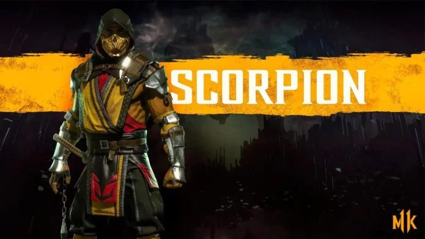
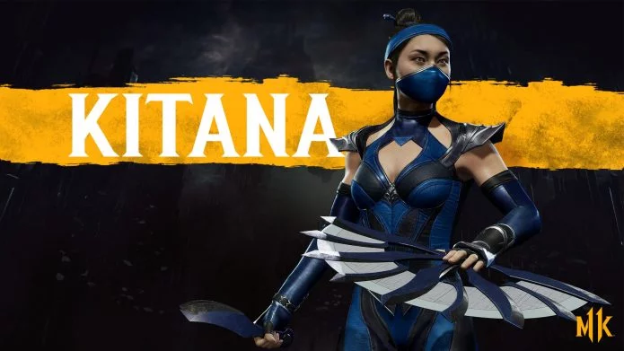
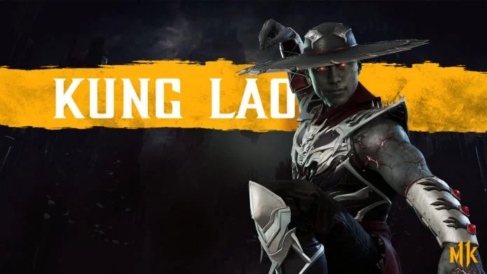
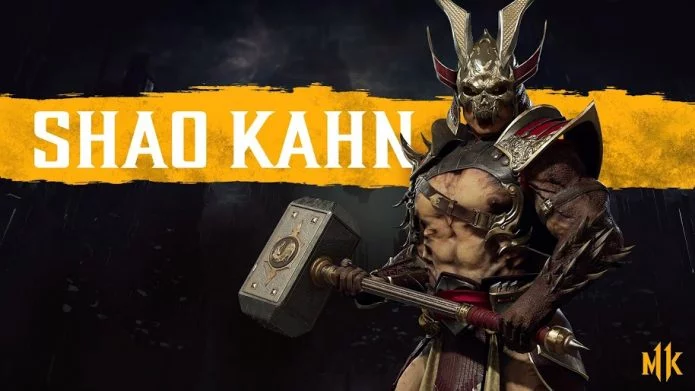
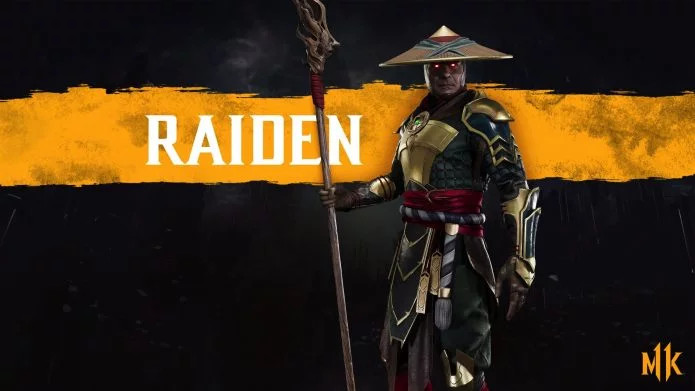

Скорпион (Scorpion)
Пожалуй, одним из самых известных героев файтинга является Скорпион. Когда-то его звали Ханзо Хасаши, и он является выходцем из клана Ширай Рю. Соплеменники Ханзо были уничтожены в кровавой расправе, устроенной колдуном Куан Чи, который хотел манипулировать воином для достижения своих целей. Смею сказать, что у него это получилось…
Саб-Зеро (Sub Zero)
Заклятый враг Скорпиона, Саб-Зеро – воин, представляющий клан Лин Куэй. Настоящее имя Би-Хан, и Ханзо очень долго предполагал, что именно Саб-Зеро стоит за убийством его семьи. Пылающему демону удалось расправиться со своим противником, но на его смену пришли другие.

Китана (Kitana)
Принцесса Эдении, которую Шао Кан сделал своей названной дочерью после завоевания страны армиями Внешнего Мира. Годы спустя, когда вся суть вскрылась, Китана предала «отца» и встала на сторону землян ради защиты других миров от амбиций Кана.
Лю Канг (Liu Kang)
Лю Канг является сильнейшим воином Земного Царства, которому удалось одолеть всех своих противников (в том числе и Шао Кана) на Смертельной Битве. После этого человеческий мир должен был остаться под защитой от вторжения Внешнего Мира, но случилось нарушение правил, которое и ввергло вселенную в войну на уничтожение. .

Кунг Лао (Kung Lao)
Соратник Лю, также монах, и также отменный боец. Кунг Лао повсюду путешествовал вместе со своим другом и братом, и даже погибли они в 11-ой части вместе. Если вы не играли, сори за спойлер, но смею вас заверить, что для монахов все закончилось более-менее положительно.
Шанг Цунг (Shang Tsung)
Колдун Шанг Цунг всегда и везде преследовал исключительно свои цели. В первом фильме по франшизе «Смертельной битвы» чародей стоял за организацией турнира и всячески старался сделать так, чтобы земляне проиграли. Но каждый раз у него не получалось реализовать свои планы, так как добро, как водится, всегда побеждает зло. .

Шао Кан (Shao Kahn)
Могущественный воитель, император Внешнего Мира и тот, по вине которого Земное Царство вступило в схватку с Внешним Миром. С самого первого дня своего правления Шао Кан преследовал лишь одну цель – вести нескончаемые завоевания новых миров, не считаясь с потерями.
Кабал (Kabal)
Соратник Кано по «Черному Дракону», который покинул группировку и отправился «на вольные хлеба». Во время вторжения Внешнего Мира на Землю его лицо было изуродовано, после чего Кабалу пришлось навсегда надеть маску, позволяющую ему жить. Периодически он менял стороны, но, по факту, является таким же преступником, как и все остальные «драконы».
